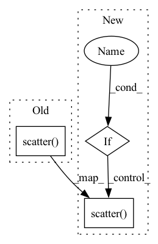

Pattern ID :14845

Before Change
self.net.eval()
predict = self.net(self.X_test)
predict = predict.data.numpy()
plt.scatter(self.X_test.numpy(), self.y_test, label="origin")
plt.scatter(self.X_test.numpy(), predict, color="red", label="predict")
plt.legend()
plt.show()
After Change
predict = self.net(self.X_test)
predict = predict.data.numpy()
if self.plt_opt:
plt.scatter(self.X_test.numpy(), self.y_test, label="origin")
plt.scatter(self.X_test.numpy(), predict, color="red", label="predict")
plt.legend()
plt.show()
In pattern: SUPERPATTERN
Frequency: 4
Non-data size: 3
Instances
Fragment ID: 49366592
Project Name: hahnec/torchimize
Commit Name: ee4c450219da21231eacee8ffefccd457c0ebbcb
Time: 2022-04-12
Author: christopher.hahne@unibe.ch
File Name: tests/unit_test_raw_fit.py
M Class Name: TorchimizerTest
N Class Name: TorchimizerTest
M Method Name: test_gna_optimizer(1)
N Method Name: test_gna_optimizer(1)
M Parent Class: unittest.TestCase
N Parent Class: unittest.TestCase
M File Name: tests/unit_test_raw_fit.py
N File Name: tests/unit_test_raw_fit.py
M Start Line: 82
M End Line: 85
N Start Line: 85
N End Line: 92
'>
Before Change
fig.colorbar(mat, ax=axes, fraction=0.015)
for i, ax in enumerate(axes):
ax.scatter([robot_position_x], [robot_position_y],
[robot_position_z], marker="*", color="red")
ax.set_xlabel("x [m]")
ax.set_ylabel("y [m]")
ax.set_zlabel("z [m]")
After Change
robot_plot_x = int(occluded_elevation_map.shape[0] / 2 + robot_position_x / terrain_resolution)
robot_plot_y = int(occluded_elevation_map.shape[1] / 2 + robot_position_y / terrain_resolution)
// we only visualize the robot position if its inside the elevation map
plot_robot_position = 0 < robot_plot_x < occluded_elevation_map.shape[0] \
and 0 < robot_plot_y < occluded_elevation_map.shape[1]
for i, ax in enumerate(axes.reshape(-1)):
if plot_robot_position:
ax.plot([robot_plot_x], [robot_plot_y], marker="*", color="red")
// Hide grid lines
ax.grid(False)
plt.draw()
plt.savefig(str(logdir / f"sample_2d_{idx}.pdf"))
if self.remote is not True:
plt.show()
plt.close()
// 3D
fig = plt.figure(figsize=[2 * 6.4, 1 * 4.8])
plt.clf()
axes = []
num_cols = 3
x_3d = np.arange(start=-int(occluded_elevation_map.shape[0] / 2),
stop=int(occluded_elevation_map.shape[0] / 2)) * terrain_resolution
y_3d = np.arange(start=-int(occluded_elevation_map.shape[1] / 2),
stop=int(occluded_elevation_map.shape[1] / 2)) * terrain_resolution
x_3d, y_3d = np.meshgrid(x_3d, y_3d)
axes.append(fig.add_subplot(100 + num_cols * 10 + 1, projection="3d"))
if ground_truth_elevation_map is not None:
axes[0].set_title("Ground-truth")
axes[0].plot_surface(x_3d, y_3d, ground_truth_elevation_map, vmin=vmin, vmax=vmax, cmap=cmap)
axes.append(fig.add_subplot(100 + num_cols * 10 + 2, projection="3d"))
axes[1].set_title("Reconstruction")
axes[1].plot_surface(x_3d, y_3d, reconstructed_elevation_map, vmin=vmin, vmax=vmax, cmap=cmap)
axes.append(fig.add_subplot(100 + num_cols * 10 + 3, projection="3d"))
axes[2].set_title("Occlusion")
// the np.NaNs in the occluded elevation maps give us these warnings:
warnings.filterwarnings("ignore", category=UserWarning)
axes[2].plot_surface(x_3d, y_3d, occluded_elevation_map, vmin=vmin, vmax=vmax, cmap=cmap)
warnings.filterwarnings("default", category=UserWarning)
fig.colorbar(mat, ax=axes, fraction=0.015)
for i, ax in enumerate(axes):
if plot_robot_position:
ax.scatter([robot_position_x], [robot_position_y],
[robot_position_z], marker="*", color="red")
ax.set_xlabel("x [m]")
ax.set_ylabel("y [m]")
ax.set_zlabel("z [m]")
'>
Fragment ID: 49366595
Project Name: mstoelzle/solving-occlusion
Commit Name: ce3eae42a63f955490d002b8855545b7673cfc54
Time: 2020-10-23
Author: maximilian@stoelzle.ch
File Name: src/learning/visualization/results_plotter.py
M Class Name: ResultsPlotter
N Class Name: ResultsPlotter
M Method Name: save_samples(3)
N Method Name: save_samples(3)
M Parent Class:
N Parent Class:
M File Name: src/learning/visualization/results_plotter.py
N File Name: src/learning/visualization/results_plotter.py
M Start Line: 107
M End Line: 171
N Start Line: 104
N End Line: 179
'>
Before Change
)
// codebook
ax.scatter(
codebook[counts > 0, 0],
codebook[counts > 0, 1],
color=google_pink,
s=500 * p_codebook[counts > 0], // size prop. to proba q(z)
)
return fig
After Change
linewidths=0.5,
)
if self.is_plot_codebook:
p_codebook = BASE_LOG ** -(ratebook)
// codebook
ax.scatter(
codebook[counts > 0, 0],
codebook[counts > 0, 1],
color=google_pink,
s=500 * p_codebook[counts > 0], // size prop. to proba q(z)
)
return fig
'>
Fragment ID: 49366594
Project Name: yanndubs/lossyless
Commit Name: e15569689ef25f0f15c1e6ca92ebc2d4019188f9
Time: 2021-02-02
Author: yanndubois96@gmail.com
File Name: lossyless/callbacks.py
M Class Name: WandbCodebookPlot
N Class Name: WandbCodebookPlot
M Method Name: plot_quantization(3)
N Method Name: plot_quantization(3)
M Parent Class: Callback
N Parent Class: Callback
M File Name: lossyless/callbacks.py
N File Name: lossyless/callbacks.py
M Start Line: 271
M End Line: 295
N Start Line: 285
N End Line: 315
'>
Before Change
if test_actual_df is not None:
test_actual_df = test_actual_df.copy()
test_actual_df[date_col] = pd.to_datetime(test_actual_df[date_col])
ax.scatter(test_actual_df[date_col].values,
test_actual_df[actual_col].values,
marker=".", color="//FF8C00", alpha=0.8, s=markersize,
label="test response")
// prediction intervals
if plot_confid:
ax.fill_between(_predicted_df[date_col].values,
After Change
if test_actual_df is not None:
test_actual_df = test_actual_df.copy()
test_actual_df[date_col] = pd.to_datetime(test_actual_df[date_col])
if line_plot:
ax.plot(test_actual_df[date_col].values,
test_actual_df[actual_col].values,
marker=None, color="//FF8C00", lw=lw, label="train response", linestyle=linestyle)
else:
ax.scatter(test_actual_df[date_col].values,
test_actual_df[actual_col].values,
marker=".", color="//FF8C00", alpha=0.8, s=markersize,
label="test response")
// prediction intervals
if plot_confid:
ax.fill_between(_predicted_df[date_col].values,
'>
Fragment ID: 49366589
Project Name: uber/orbit
Commit Name: 10423f8525e4216c0efbce35cb2cd84d4f400bdb
Time: 2021-04-10
Author: edwinng@uber.com
File Name: orbit/diagnostics/plot.py
M Class Name: AnonimousClass
N Class Name: AnonimousClass
M Method Name: plot_predicted_data(16)
N Method Name: plot_predicted_data(16)
M Parent Class:
N Parent Class:
M File Name: orbit/diagnostics/plot.py
N File Name: orbit/diagnostics/plot.py
M Start Line: 100
M End Line: 122
N Start Line: 71
N End Line: 134